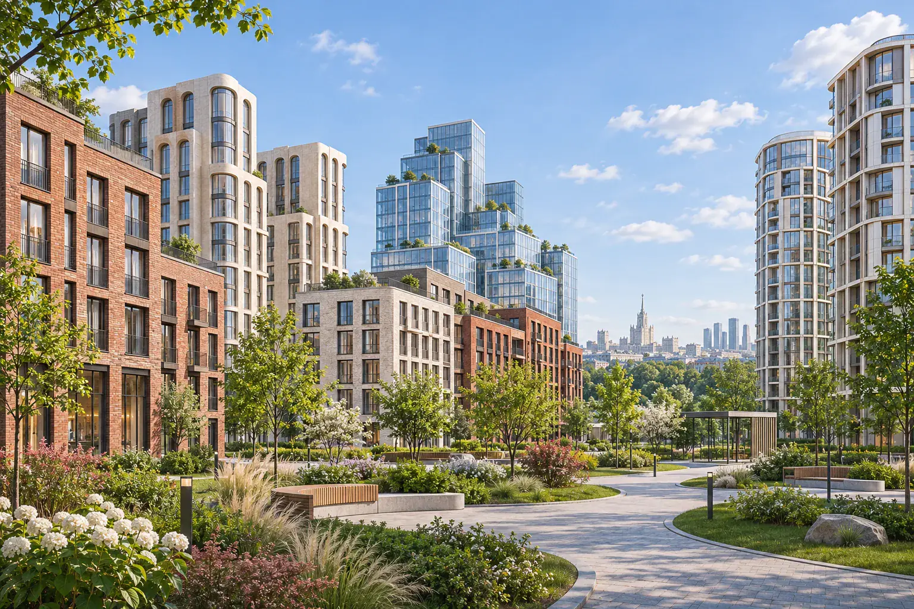

Проверьте приглашение
Сверьте дату, время и адрес. Уточните, как получить ключи и сколько времени отведено на осмотр.
Ищите жилой комплекс по названию, застройщику или городу. В каталоге собраны объекты Москвы и Новой Москвы, городов Московской области, Санкт-Петербурга, Казани и Нижнего Новгорода.

Найдите ЖК по названию, застройщику или городу
Ничего не найдено. Измените запрос или выберите другой город.
Для клиентов ПИК и А101 подходит удобный акт осмотра по форме застройщика. По нему клиент сможет самостоятельно перенести замечания в приложение застройщика, если недостатки принимают только через приложение.
Как проходит приёмка квартирыСверьте дату, время и адрес. Уточните, как получить ключи и сколько времени отведено на осмотр.
Возьмите документы для доступа в квартиру. Если приёмка проходит без вас, заранее уточните требования к представителю.
Специалист проверит доступные помещения, конструкции и инженерные системы, а выявленные замечания зафиксирует в акте осмотра.
Специалист внесёт в него выявленные замечания, чтобы вы могли использовать акт при общении с застройщиком.
Введите название ЖК или застройщика в поиск. Можно также открыть список по первой букве застройщика и выбрать нужный жилой комплекс.
Укажите застройщика и дату осмотра. Подскажем, как подготовиться и какой формат проверки выбрать.